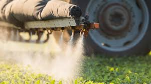

Os agrotóxicos, também conhecidos como pesticidas, são substâncias químicas utilizadas na agricultura para controlar pragas, doenças e plantas daninhas. Embora desempenhem um papel crucial na produção de alimentos, aumentando a produtividade e garantindo a proteção das culturas, o uso desses produtos tem gerado preocupações significativas relacionadas à saúde humana, ao meio ambiente e à sustentabilidade.
A aplicação de agrotóxicos pode trazer benefícios imediatos, como a redução de perdas nas colheitas e o aumento da eficiência na produção agrícola. No entanto, a exposição prolongada a esses químicos está associada a uma série de problemas de saúde, que vão desde efeitos agudos, como envenenamento e reações alérgicas, até doenças crônicas, incluindo câncer e distúrbios neurológicos. Trabalhadores rurais e comunidades vizinhas estão especialmente vulneráveis, uma vez que a aplicação e o manuseio desses produtos frequentemente ocorrem em condições que podem resultar em exposição direta.
.jpg)
Além dos riscos para a saúde, o uso de agrotóxicos também afeta o meio ambiente. A contaminação de solos e corpos d'água é uma preocupação significativa, pois os produtos químicos podem se dispersar e acumular-se em ecossistemas, prejudicando a fauna e a flora locais. A resistência de pragas e doenças aos pesticidas é outro problema crescente, o que pode levar ao uso de substâncias ainda mais tóxicas e ao ciclo de dependência desses produtos químicos
A busca por alternativas mais seguras e sustentáveis tem levado ao desenvolvimento e à adoção de práticas agrícolas que visam reduzir a dependência de agrotóxicos. A agricultura orgânica, por exemplo, prioriza o uso de métodos naturais e menos agressivos ao meio ambiente, enquanto técnicas como a rotação de culturas e o controle biológico utilizam organismos naturais para combater pragas e doenças. Além disso, a pesquisa e a inovação na ciência agrícola buscam desenvolver novos produtos com menor impacto ambiental e melhores perfis de segurança para a saúde humana
.jpg)
Em resumo, enquanto os agrotóxicos têm desempenhado um papel importante na agricultura moderna, é essencial balancear seus benefícios com os riscos associados. Promover práticas agrícolas mais seguras e sustentáveis é crucial para proteger a saúde humana e preservar o meio ambiente para as gerações futuras.